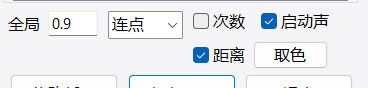
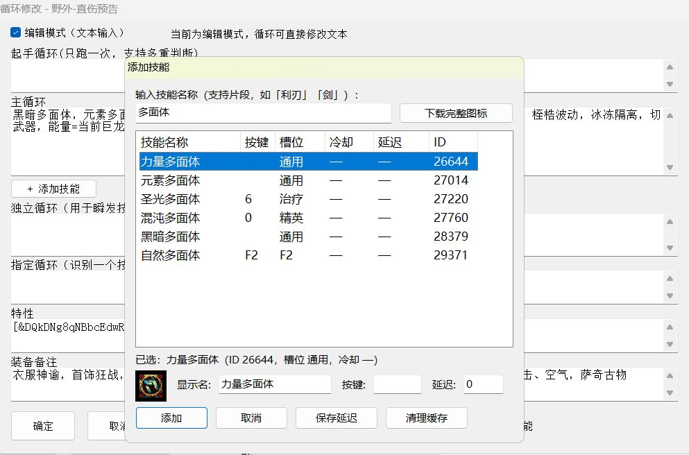
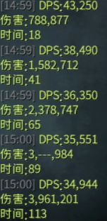
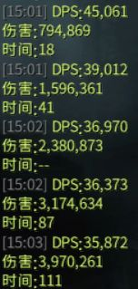
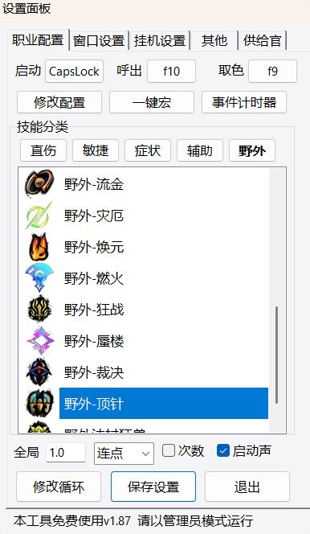
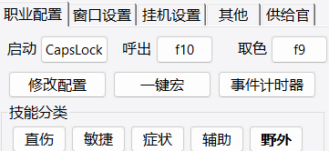
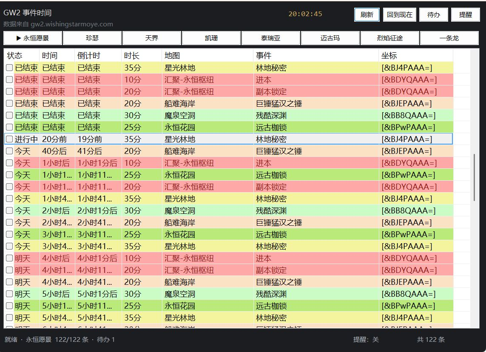
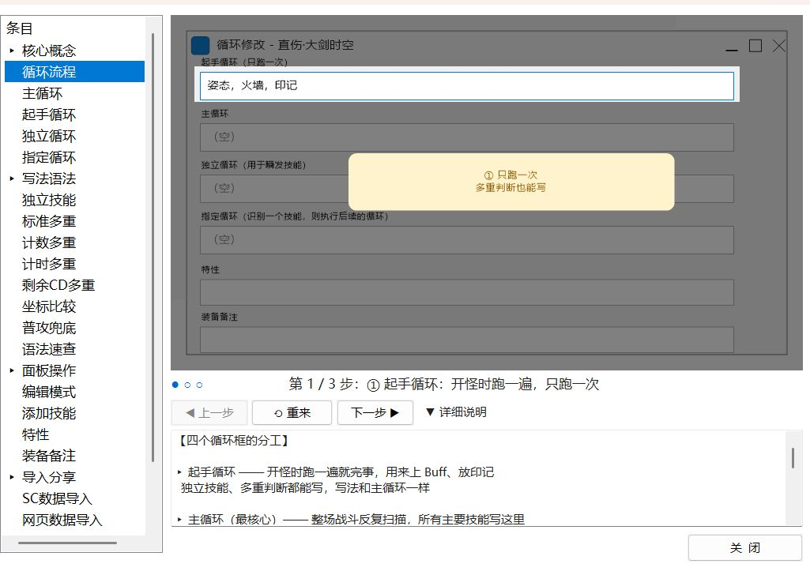

自由循环1.891更新，修复bug、优化
最新更新
历史更新
1，优化诊断模式，该功能可以解决部分开启循环后卡技能的问题，用于自行排查。
f10-其他勾选诊断模式，进入游戏开启循环。
开启后在屏幕左侧有一个信息显示，可显示技能按键、次数，触发了哪些技能。
一般排除是否卡技能，无非是颜色，以及卡按键，这个诊断模式可以用于排查技能误触情况，例如某个技能，取色后，持续卡按键，即使技能冷却后也依然在按该技能，通过该模式可以通过查看使用次数的增加来判断哪个技能出问题。
2，修复了f9关闭计时的bug。
历史更新

1，f10-新增距离判断取色，用于激战2处于施法距离内才会释放，一般获取非战斗状态下，普攻下方的红条，可自行决定是否开启。
该功能是全局生效，例如，技能超出普攻下方的距离时，不会触发，而是直接会跳到下个技能，如果距离符合，才会释放，其他可等待后续优化。

2，f10-修改循环-添加技能，新增激战2所有职业技能目录，用于快速搜索技能名称，以及正确显示技能图片，同时添加能将自动填入部分技能延迟，无需手动输入。
第一次运行，建议点击右上角下载完整图片，预计花费2-5分钟，根据网络环境决定。
如不下载，点击部分技能图片会在后台单独下载该技能图标，但是会有少许卡顿，是正常情况，图标下载完整后正常。
该功能需要更新网盘的gw2_skill_cache.json文件，覆盖原文件，该文件包含所有最新激战2技能、延迟，图标等信息。
3，部分内部延迟条件优化，与1.79版本保持一致性，对整体输出获取有一定帮助，f10-其他，帧率同步，增加文字介绍。
4，修复了一个bug，关闭本地计时后，如果启停循环，仍会导致多重判断计时失效，例如，技能1，技能1>5000=技能2，技能1在启停后，技能1仍会错误读取本地计时的问题，导致技能2被触发。
本次更新为测试版，如有问题，留言反馈。
历史更新


1，设置面板ui调整，上一版本列表内显示信息太少，翻页困难，当前增加至8个职业配置，并放大了技能图标的显示。

2，在f10页面中，增加了事件计时器功能，用于提醒世界boss，地图事件等，信息来源星钾岛。


并对部分特殊事件做了颜色标记，例如汇聚、跑男。
3，修复了技能1，技能1>2000=技能2，技能1=3=技能3，其中技能计时判断会导致技能1次数被清空，导致实际次数不符的问题。
4，修复了，f9内，关闭本地计时功能后，启动循环后，技能依然会读取本地计时，错误触发多重判断计时的问题。
5，帮助页面重做，现在帮助页面会包含多条图片信息，利用ai补全相关介绍。

评论列表（26）
论坛增加个打赏功能和任务悬赏吧，给为爱发电的大佬们一点动力 软件增加赞助功能，比如后台挂机、隐藏图标等等，白嫖了一年，都有点不好意思了
玩的王权 好久没用了， 下了1.891试了试 为啥按下启动键还会连带按alt啊？
好像下载的时候不能覆盖原来的文件夹，我覆盖了 配置全都没了
下载地址在哪啊
大佬可以把开关图标隐藏吗
@陈晨 免费版防止工具滥用，如果后续有这个需求，可以单独加个赞助模式。
大佬，更新后技能按键改不了类似alt+1之类的组合键了呢
@默剧 等晚些修复
@melis 感谢大佬
诶，现在看不到其他时期的更新内容了么
@winn 旧的在公告分类里
大佬 ，普攻可不可以也支持添加取色功能 ， 方便在特定条件下释放. 试过XXX=普攻 ，效果都没有直接添加普攻效果好 ，只添加普攻切包又会卡技能， 试过新建普攻技能怎么设置延迟间隔，好像都没有自带的普攻效果好，可能自带普攻有代码级的优先权吧
@. 为什么要单独添加，普攻是内置的条件，你如果不用内置普攻，想自己设置，就改一个名字，叫技能1就行了，xxx=技能1，不是跟普攻一个效果，前者满足，后者也满足。
@melis 就是说自己改的技能1，效果没有自带普攻好 ，就是想问下普攻可不可以考虑也支持取色，没有取色状态默认普攻，取色状态就增加了判断条件 。尝试复制粘贴坐标颜色代码进普攻里 可以保存，但是没有作用
@. 因为普攻1本身就没任何条件，他只是一个跟随按键而已，所有技能不可用时自动补上 按键1。
你说的加颜色其实没任何意义，技能1、跟普攻1，这完全是一个东西，效果不好使因为你加了颜色判断，判断必然会触发缓慢，而普攻1的图标又闪烁+变灰，基本没有太大意义。
@melis 好的，谢谢，我的技能1取色是武器组技能CD最长技能过12点位置，而按键还是技能1的快捷键，感觉这样可以判断武器组技能释放普攻，又不受技能1频繁变灰影响
@. 这种思路也行，最终是通过普攻触发，否则就是原地罚站
M佬，开启距离功能会掉伤害 差好几K
@让天苛刻 是技能没打到导致，还是性能导致，前者是游戏判断，超过普攻范围的技能不会触发。
@melis 贴脸放技能也会掉伤害 原因不明 距离是够的
大佬，gw2_skill_cache.json这个文件要放到哪个目录下面
@手残党 newconfig
大佬怎么把以前创建的配置批量导入？每次更新都要重新写配置太麻烦了
@沐昔昔 为什么要重新写？
改进的每一次都是痛点，哈哈~爱你哟 m大